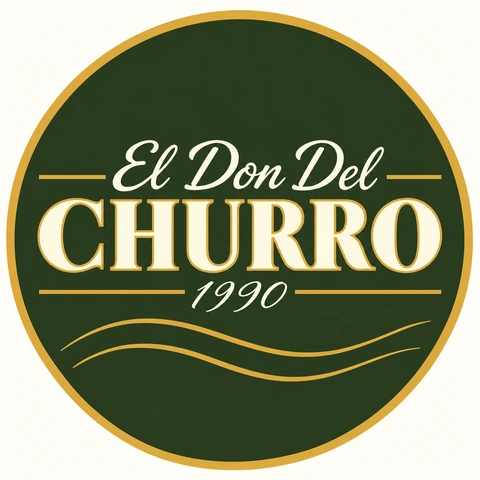
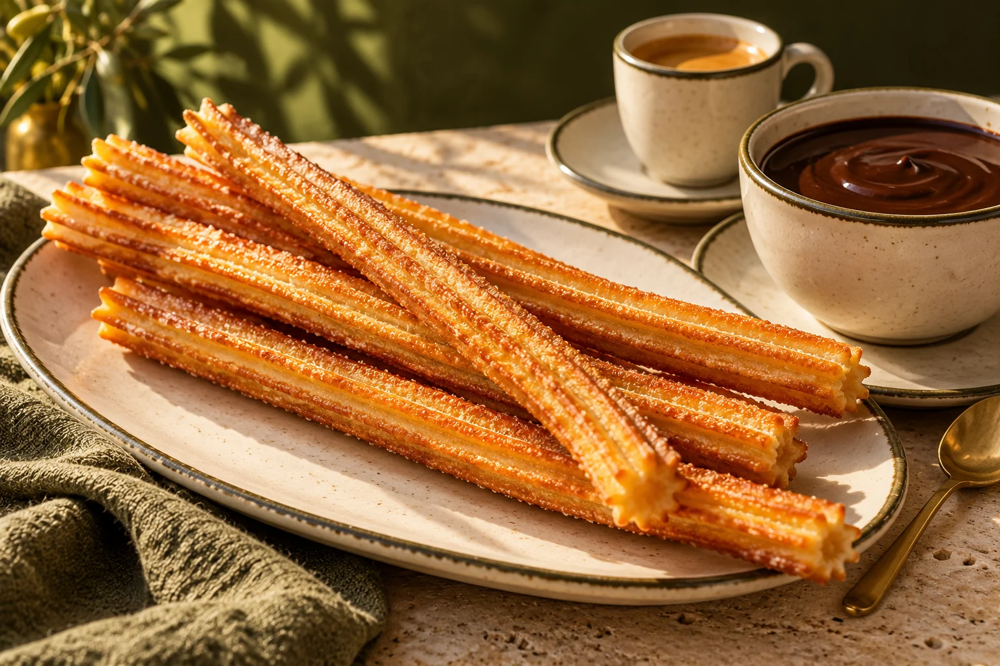

Churros
a tu gusto
3,00 €Una ración del tipo que elijas,
sin acompañamiento.
TU RACIÓN DE CHURROS


CHURRERÍA & CAFETERÍA · SEVILLA
Churros finos y de rueda, café y chocolate.
Nos encontrarás en el centro de Sevilla.
02 / POSTRES
Un postre para comer a cucharadas.
Capas de galleta, cremas y otros ingredientes en una lata transparente. Una presentación distinta para el final dulce de tu visita.
03 / UBICACIÓN Y APERTURA
Publicaremos aquí la fecha y los horarios cuando estén confirmados.
Si el mapa no se muestra, abre la ubicación en Google Maps (se abre en otra pestaña).
CALLE CORREDURÍA 42 · SEVILLA Abrir indicaciones (se abre en otra pestaña)04 / CONTACTO
Usa el formulario o escríbenos por correo. Este canal es para consultas; no gestionamos pedidos ni reservas online.
eldondelchurro@gmail.comEl Don del Churro utilizará tu nombre, dirección de correo y mensaje para gestionar y responder a tu consulta. FormSubmit tramita el envío de estos datos a eldondelchurro@gmail.com. Puedes solicitar acceso, rectificación y supresión escribiendo a ese correo. Este formulario no te suscribe a comunicaciones comerciales ni crea una cuenta de usuario.
INFORMACIÓN ÚTIL
No ofrecemos pedidos ni reservas online. El formulario sirve para hacernos consultas.
Consulta con el personal del local antes de elegir. Las imágenes y los ingredientes que aparecen en la web son orientativos.
Son imágenes de presentación generadas con IA. El producto servido y las combinaciones disponibles pueden variar.